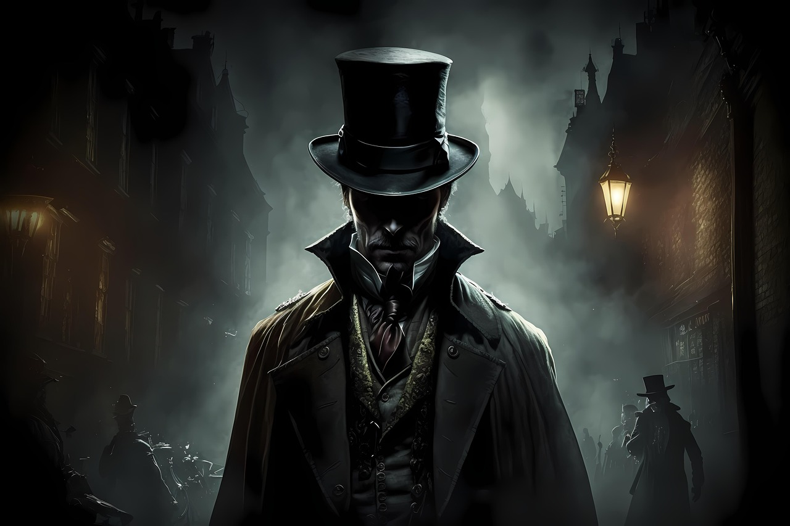

Serial Killer
Os serial killers são criminosos que cometem assassinatos de forma repetitiva, geralmente com intervalos entre os crimes e um padrão ou motivação específica. Alguns casos de serial killers são famosos por sua brutalidade, complexidade das investigações ou pela maneira como os assassinos se comportaram durante os julgamentos e suas vidas. Aqui estão alguns dos casos mais conhecidos.
John Wayne Gacy (EUA, 1972-1978)
John Wayne Gacy, conhecido como o "Killer Clown" (o "Palhaço Assassino"), foi responsável pela morte de pelo menos 33 jovens e homens, que ele sequestrava, torturava e matava. Gacy atraía suas vítimas com promessas de trabalho ou ajuda, e as matava em sua casa, escondendo muitos dos corpos sob o piso. Ele se apresentava como um respeitável cidadão, conhecido por se vestir de palhaço em eventos comunitários. Gacy foi preso em 1978 e executado em 1994.
Jeffrey Dahmer (EUA, 1978-1991)
Jeffrey Dahmer, conhecido como o "Canibal de Milwaukee", cometeu uma série de assassinatos horríveis, envolvendo não apenas o homicídio, mas também necrofilia e canibalismo. Ele matou 17 homens e meninos entre 1978 e 1991. Dahmer mantinha partes dos corpos das vítimas, e alguns dos crimes envolviam práticas de mutilação e experimentos. Ele foi preso em 1991 após uma de suas vítimas conseguir escapar e denunciar a polícia. Dahmer foi condenado à prisão perpétua e morreu em 1994, assassinado por um companheiro de cela.
Jack, o Estripador (Reino Unido, 1888)
Embora nunca tenha sido identificado, Jack, o Estripador é talvez o serial killer mais famoso da história. Ele matou e mutilou várias mulheres em Londres, no bairro de Whitechapel, entre agosto e novembro de 1888. O modo como ele matou e mutilou suas vítimas sugeriu que o assassino tivesse algum tipo de conhecimento médico. Sua identidade nunca foi descoberta, o que gerou muitas teorias e especulações ao longo dos anos.
Aileen Wuornos (EUA, 1989-1990)
Aileen Wuornos foi uma mulher que matou sete homens em Florida entre 1989 e 1990. Ela alegava que seus crimes foram cometidos em legítima defesa, pois os homens tentaram estuprá-la enquanto ela trabalhava como prostituta. Wuornos foi condenada por seis assassinatos e foi executada na cadeira elétrica em 2002. Sua história gerou enorme interesse, e sua vida foi retratada no filme "Monster" (2003), no qual a atriz Charlize Theron interpretou Aileen.
Richard Ramirez (EUA, 1984-1985)
Conhecido como o "Night Stalker" (o "Stalker da Noite"), Richard Ramirez cometeu uma série de assassinatos, estupros e roubos em Los Angeles e em áreas próximas durante os anos de 1984 a 1985. Ele entrou nas casas das vítimas durante a noite, aterrorizando a cidade. O caso se tornou famoso não apenas pela brutalidade dos crimes, mas também pelo simbolismo satânico que ele usava, como pentagramas desenhados nas cenas do crime. Ramirez foi preso em 1985 e morreu de câncer em 2013.